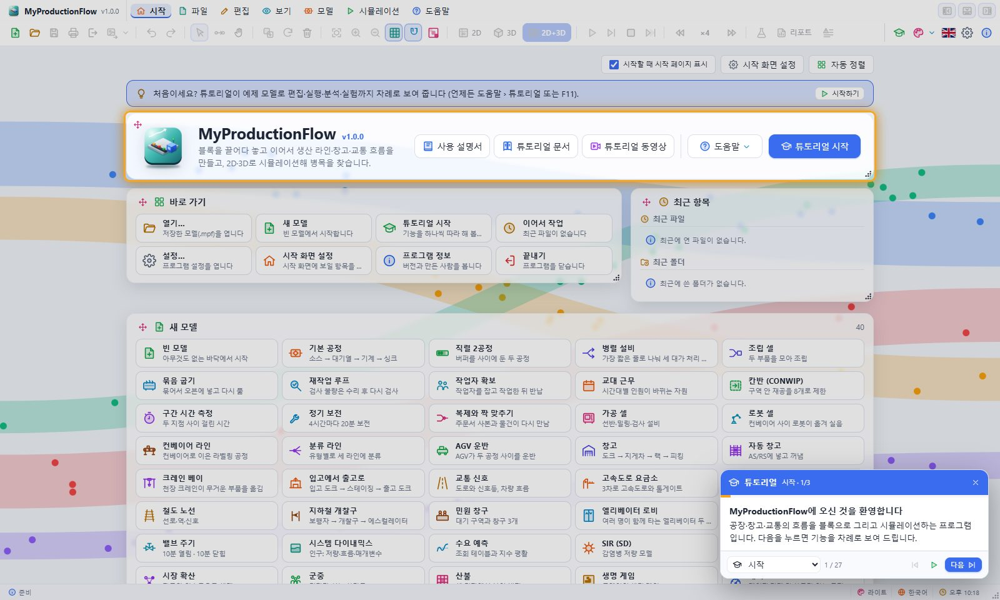
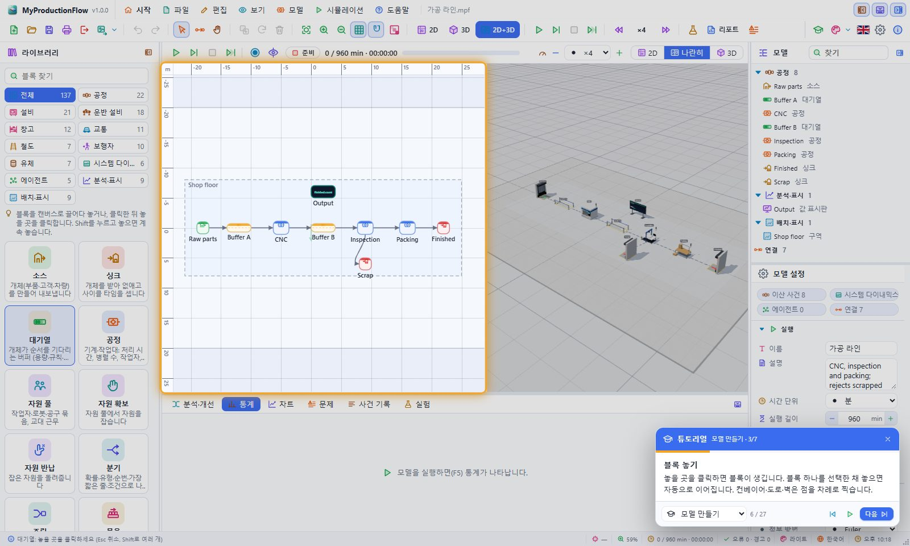
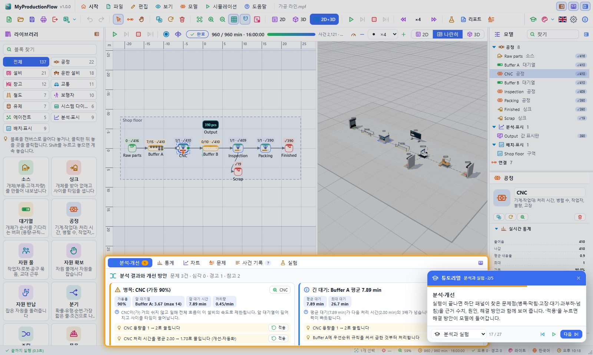
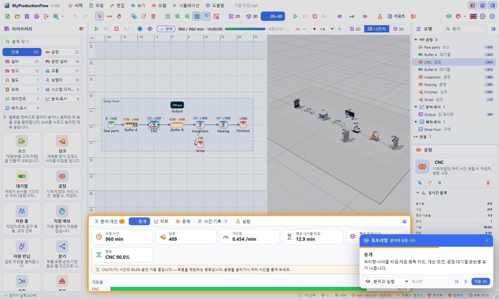
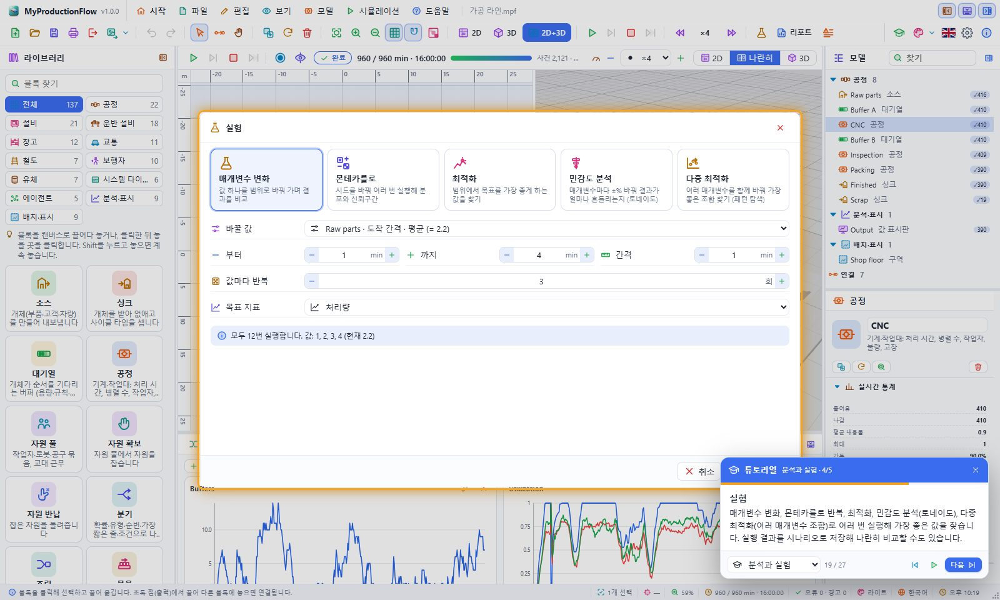
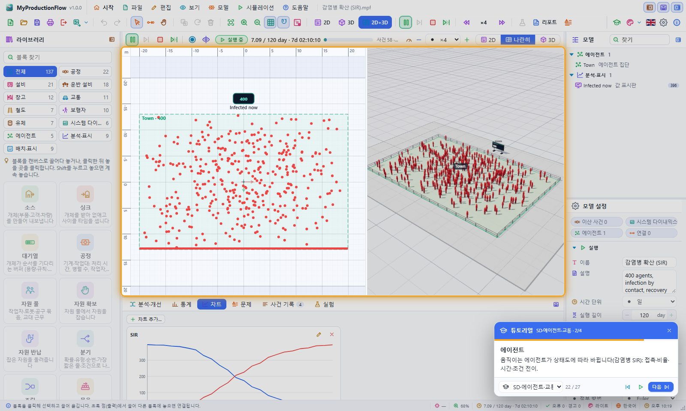

MyProductionFlow 사용 설명서
MyProductionFlow는 공장 생산 라인, 물류 창고, 서비스 창구, 교통 시스템의 흐름을 블록을 끌어다 놓고 이어서 만들고, 시뮬레이션해서 2D와 3D 애니메이션으로 보며 병목을 찾는 프로그램입니다. 세 가지 시뮬레이션 방법을 한 모델에서 함께 씁니다.
| 방법 | 쓰임 | 블록 |
|---|---|---|
| 이산 사건 (Discrete Event) | 부품·고객·차량·열차·보행자가 공정을 하나씩 거쳐 가는 흐름 | 공정 22 · 설비 21 · 운반 18 · 창고 12 · 교통 11 · 철도 7 · 보행자 10 |
| 시스템 다이내믹스 (SD)·유체 | 재고·인구·자금·액체처럼 쌓이고 흐르는 양, 피드백 | SD 6 (저량·흐름·변수·매개변수·조회 테이블·평활) · 유체 7 (탱크·배관·밸브·펌프 …) |
| 에이전트 기반 (ABM) | 움직이며 상태가 바뀌는 개체들 (감염병, 입소문), 셀 자동자 | 에이전트 집단 · 소비자 · 군중 · 셀 격자 · 생명 게임 |
모두 12개 분류, 137종 블록과 분석·표시 9종, 배치 9종이 있습니다. 실행 후에는 분석·개선 탭이 문제점과 해결 방안을 보여 줍니다.

1. 화면 구성
- 메뉴 막대 — 시작 · 파일 · 편집 · 보기 · 모델 · 시뮬레이션 · 도움말. 오른쪽 끝에 왼쪽·아래·오른쪽 패널 열고 닫기 단추(시작 화면에서는 꺼짐)와 창 단추(최소화·최대화·닫기)가 있고, 막대를 끌면 창이 움직입니다.
- 도구 모음 — 새로 만들기·열기·저장, 실행 취소, 선택·연결·화면 이동 도구, 복제·회전·삭제, 확대, 격자, 2D/나란히/3D, 실행 단추, 재생 속도(− 현재 배속 +, 배속을 누르면 목록), 실험·리포트·모델 검사, 튜토리얼·테마·언어·설정·정보. 창이 좁으면 남는 단추는 » 메뉴로 갑니다.
- 라이브러리 (왼쪽) — 모든 블록이 분류별로 있습니다. 검색하거나 분류를 고릅니다.
- 실행 막대 (가운데 위) — 실행·한 사건씩·정지·끝까지, 상태, 모델 시간과 시계, 진행 막대, 사건 수, 속도, 2D/나란히/3D 전환.
- 2D 편집기와 3D 화면 (가운데) — 2D에서 모델을 그리고, 3D에서 같은 모델을 입체로 봅니다. 둘 사이 경계를 끌어 비율을 바꿉니다.
- 2D 위쪽과 왼쪽에 눈금자(미터)가 있고, 마우스 위치가 눈금자 위에 빨간 선으로 표시됩니다 (보기 › 표시 › 눈금자).
- 격자는 5×5 (가는 선 5칸마다 굵은 선)이며, 확대·축소해도 화면에서 늘 비슷한 크기로 다시 그려집니다: 0.2 m · 1 m · 5 m · 25 m … 로 5배씩 바뀌고, 가는 선은 부드럽게 나타납니다. 3D 바닥 격자도 카메라 거리에 따라 같은 규칙으로 바뀝니다.
- 모델 목록과 속성 (오른쪽) — 위는 블록 목록(분류별), 아래는 선택한 블록의 속성입니다. 아무것도 선택하지 않으면 모델 설정이 나옵니다.
- 하단 패널 — 분석·개선 · 통계 · 차트 · 문제 · 사건 기록 · 실험(시나리오 비교 포함).
- 좌우 패널은 처음에 같은 폭(280px)이고 둘 다 240px까지 줄일 수 있습니다. 패널 머리의 접기 단추(패널 모양 + 화살표)로 접고, 도구 모음의 같은 단추로 다시 폅니다.
- 수치 입력 칸은 모두 [− 값 단위 +] 모양입니다. − / +로 한 단계씩(누르고 있으면 계속) 바꾸고, 단위(min · m · 개 · /min · % …)가 값 옆에 나옵니다.
- 테마 단추(도구 모음 오른쪽 팔레트)는 누를 때마다 테마를 무작위로 바꿉니다. 오른쪽의 ▾는 드롭다운 메뉴입니다: 시스템 · 밝은 테마 ▸ · 어두운 테마 ▸ · 사용자 정의 · 테마 설정….
- 상태 표시줄 — 알림, 선택 수, 포인터 위치(m), 확대 비율, 모델 시간, 문제 수, 테마, 언어, 시계.
2. 시작하기

시작 화면에서 새 모델(템플릿 40개) 또는 예제 모델 60개(6개 분류에 10개씩) 중 하나를 고릅니다. 예제는 열자마자 F5로 실행됩니다.
템플릿 40개 — 빈 모델 · 기본 공정 · 직렬 2공정 · 병렬 설비 · 조립 셀 · 묶음 굽기 · 재작업 루프 · 작업자 확보 · 교대 근무 · 칸반(CONWIP) · 구간 시간 측정 · 정기 보전 · 복제와 짝 맞추기 · 가공 셀 · 로봇 셀 · 컨베이어 라인 · 분류 라인 · AGV 운반 · 창고 · 자동 창고 · 크레인 베이 · 입고에서 출고로 · 교통 신호 · 고속도로 요금소 · 버스 노선 · 철도 노선 · 지하철 개찰구 · 민원 창구 · 엘리베이터 로비 · 탱크 채우고 비우기 · 밸브 주기 · 시스템 다이내믹스 · 수요 예측 · SIR(SD) · 에이전트 · 시장 확산 · 군중 · 산불 · 생명 게임 · 대시보드.
| 예제 분류 | 예제 |
|---|---|
| 제조 (9) | 가공 라인 · 조립 라인 · 작업자 공유 잡숍 · 병입 라인 · 교대 근무 · 칸반 생산 라인 · 예방 보전 가공 셀 · 도장 공장 · 전자 조립 |
| 물류·창고 (7) | 창고 입출고 · 크로스도킹 · AGV 공장 물류 · 공급망 재고(SD) · 자동 창고 센터 · 이커머스 풀필먼트 · 컨테이너 항만 |
| 서비스 (6) | 은행 창구 · 응급실 · 공항 보안 검색 · 세차장 · 레스토랑 · 콜센터 |
| 교통·철도·보행자 (7) | 교차로 신호 · 주차장 · 고속도로 톨게이트 · 철도 노선 · 지하철역 · 경기장 퇴장 · 버스 전용 차로 |
| 시스템 다이내믹스·유체 (6) | 신제품 확산(Bass) · 포식자–피식자 · 인력 계획 · 정수 처리장 · 배합 공정 · 재고 정책 |
| 에이전트·하이브리드 (5) | 감염병 확산(SIR) · 제품 입소문 · 하이브리드(SD 수요 → 생산) · 산불 확산 · 생명 게임 |
3. 그래픽으로 모델 만들기
3.1 블록 놓기

- 라이브러리의 카드를 캔버스로 끌어다 놓거나, 카드를 클릭한 뒤 놓을 곳을 클릭합니다. Shift를 누른 채 클릭하면 같은 블록을 계속 놓습니다. Esc로 그만둡니다.
- 블록 하나를 선택한 채 새 블록을 놓으면 자동으로 이어집니다 (Ctrl+Z로 취소).
- 컨베이어 · 도로 · 벽은 점을 차례로 클릭하고 두 번 클릭 또는 Enter로 끝냅니다. Shift를 누르면 직각으로 그립니다.
- 블록은 0.5 m 격자에 맞춰집니다 (설정에서 바꿈, Alt를 누르고 끌면 맞추지 않음).
3.2 연결하기

- 블록 오른쪽의 초록 점(출구) 을 끌어 다음 블록(또는 그 입구)에 놓습니다.
- 연결 도구(C) 로는 블록에서 블록으로 끌면 됩니다.
- 출구가 둘인 블록: 대기열의 아래 주황 점은 최대 대기를 넘긴 개체, 공정의 아래 주황 점은 불량품 출구입니다.
- 시스템 다이내믹스: 저량 → 흐름(비움), 흐름 → 저량(채움)은 물질 흐름(파이프)으로, 그 밖의 SD 연결은 영향 화살표(점선)로 이어집니다.
- 연결선을 끌면 꺾은 점이 생기고, 꺾은 점을 끌어 옮깁니다. 연결선 오른쪽 클릭 › 연결선 곧게.
3.3 선택·이동·편집
- 클릭으로 선택, Shift/Ctrl+클릭으로 더하기, 빈 곳을 끌어 사각형 선택 (왼→오: 완전히 들어간 것, 오→왼: 걸친 것).
- 끌어서 이동, 화살표 키로 조금씩(Shift: 5 m), R 90° 회전, Ctrl+D 복제, Delete 삭제, Ctrl+C/V 복사·붙여넣기, F2 또는 두 번 클릭으로 이름 바꾸기.
- 여러 개를 고르면 속성 패널에서 맞춤·간격 같게를 씁니다.
- 컨베이어·도로·벽은 선택한 뒤 점을 끌어 모양을 바꾸고, 선분을 두 번 클릭해 점을 더하고, 점을 오른쪽 클릭해 지웁니다. 구역·에이전트 집단·차트 판은 모서리를 끌어 크기를 바꿉니다.
- 3D 화면에서도 블록을 클릭해 고르고, 선택한 블록을 끌어 바닥 위에서 옮길 수 있습니다.
- 휠로 확대·축소, 가운데 단추나 Space+끌기로 화면 이동, Ctrl+0 전체 보기.
3.4 속성

블록을 고르면 오른쪽 아래에 속성이 나옵니다. 값을 바꾸면 바로 모델에 들어가고 실행 취소할 수 있습니다.
- 분포 — 고정값, 균등, 삼각, 정규, 지수, 로그정규, 얼랑, 감마, 와이블, 베타, 포아송, 경험적(값·비율), 식. 아래에 표본 막대그래프와 평균이 미리 보입니다.
- 식 —
Queue1.length * 2,if(Stock1 > 100, 1, 0),0.35 + sinwave(0.2, 720, t)처럼 씁니다. 쓸 수 있는 이름은 입력할 때 목록으로 나옵니다. - 목록 — 개체 유형(이름·색·비율), 일정표(시작·끝·값), 상태(이름·색), 전이(출발→도착, 종류, 값).
- 위치·크기 — X, Y, 회전, 폭·깊이, 경로 길이와 통과 시간.
3.5 블록 종류
| 분류 | 블록 |
|---|---|
| 공정 (21) | 소스 · 싱크 · 대기열 · 공정 · 자원 풀 · 자원 확보 · 자원 반납 · 분기 · 조립 · 묶음 · 묶음 풀기 · 게이트 · 속성 지정 · 지연 · 복제 · 짝 맞추기 · 제한 구역 시작/끝(CONWIP·칸반) · 시간 측정 시작/끝 · 정기 보전 · 이벤트 |
| 설비 (21) | CNC 가공기 · 선반 · 밀링기 · 드릴 프레스 · 프레스 · 사출 성형기 · 오븐·경화로 · 건조기 · 도장 부스 · 용접 로봇 · 레이저 절단기 · 절단기 · 연삭기 · 3D 프린터 · 조립 작업대 · 검사대 · 시험대 · 라벨러 · 포장기 · 세척기 · 키팅 작업대 |
| 운반 설비 (18) | 컨베이어 · 롤러 컨베이어 · 슈트 · 운반차 · 지게차 무리 · AGV 무리 · 견인 열차 · 천장 크레인 · 드론 무리 · 로봇 · 수직 리프트 · 턴테이블 · 분류기 · 분기 장치 · 합류 · 팔레타이저 · 디팔레타이저 · 축적 버퍼 |
| 창고 (12) | 랙 · 도크 · 자동 창고(AS/RS) · 플로 랙 · 바닥 적치 · 냉장 창고 · 입고 도크 · 출고 도크 · 피킹 스테이션 · 포장 스테이션 · 스테이징 레인 · 품질 보류 |
| 교통 (11) | 도로 · 신호등 · 주차장 · 차량 발생 · 차량 소멸 · 고속도로 · 버스 정류장 · 톨게이트 · 주유소 · 횡단보도 · 교차 합류 |
| 철도 (7) | 철도 선로 · 열차 발생 · 열차 소멸 · 역 승강장 · 분기기 · 철도 신호 · 조차장 |
| 보행자 (10) | 보행자 발생 · 보행자 퇴장 · 보행 통로 · 에스컬레이터 · 서비스 창구 · 대기 구역 · 개찰구 · 보안 검색 · 엘리베이터 · 좌석 구역 |
| 유체 (7) | 탱크(용량) · 배관 · 밸브(열림/닫힘 주기) · 펌프 · 공급원 · 배출 · 혼합 탱크 |
| 시스템 다이내믹스 (6) | 저량(용량 선택) · 흐름 · 변수 · 매개변수 · 조회 테이블(x→y 그래프 함수) · 지수 평활(SMOOTH) |
| 에이전트 (5) | 에이전트 집단 · 소비자 집단 · 군중 · 셀 격자(이웃 규칙) · 생명 게임 |
| 분석·표시 (9) | 값 표시판 · 게이지 · 카운터 · 진행 막대 · 시계열 차트 · 막대 · 영역 · 원 · 히스토그램 |
| 배치·표시 (9) | 구역 · 사무 구역 · 벽 · 울타리 · 바닥 표시선 · 기둥 · 출입문 · 나무 · 글자 |
설비·운반·창고·교통·철도·보행자 블록은 공정·컨베이어·운반차·랙 같은 기본 동작 위에 모양·기본값을 갖춘 실제 설비입니다. 속성은 기본 동작과 같고(처리 시간·용량·고장·불량 …) 2D·3D에서 각자의 모양으로 보입니다.
주요 속성:
| 블록 | 주요 속성 |
|---|---|
| 소스 | 도착 간격 분포 / 도착률 식(포아송) / 시간대별 도착률, 묶음 도착, 최대 수, 유형 섞기, 모양, 출구가 막히면 기다림·버림 |
| 대기열 | 용량, FIFO·LIFO·우선순위·무작위, 최대 대기(넘으면 아래 출구) |
| 공정(설비) | 모양 34가지, 병렬 수, 처리 시간, 자원 풀·필요 수, 유형 변경 준비, 불량률, 고장(MTBF·MTTR), 시간당 비용 |
| 복제 / 짝 맞추기 | 사본 수·유형·색 / 같은 유형끼리, 용량 |
| 제한 구역 | 구역 안 최대 개체 수 (끝 블록이 시작 블록을 가리킴) |
| 정기 보전 | 대상 설비, 간격 분포, 보전 시간 분포, 첫 시각 |
| 이벤트 | 실행 조건(한 번 · 주기마다 · 조건이 참이 될 때), 처음 시각, 반복 간격, 최대 횟수, 대상 블록, 바꿀 속성(capacity, time.mean …, 매개변수면 비움), 새 값 식(current는 바꾸기 전 값) — 예: 240분에 CNC 용량을 current + 1로 (설비 증설), 매일 9시에 도착률 매개변수를 2배로 (러시아워) |
| 컨베이어·도로·선로·통로 | 경로, 속도, 간격, 폭, 쌓임형, 차로 수 |
| 운반차 | AGV·지게차·카트·드론·크레인·견인차, 대수, 속도, 싣기·내리기, 직각/직선 경로, 대기소 복귀 |
| 랙·창고 | 칸·단, 보관 시간, 넣기·꺼내기, 꺼내는 순서 |
| 신호등 | 녹·황·적색, 시작 지연, 통과 간격 |
| 탱크·밸브 | 용량, 초기값 / 열림·닫힘 시간 |
| 조회 테이블·평활 | 입력 식, x·y 값 / 입력, 지연 시간, 초기값 |
| 에이전트·셀 격자 | 수·속도 / 열·행·이웃(8방향·4방향)·가장자리, 상태, 초기 비율, 전이(비율·시간·접촉·이웃 수·조건) |
| 표시판 | 식, 숫자·게이지·막대·카운터, 최소·최대 |
3.6 식에서 쓰는 이름
| 이름 | 뜻 |
|---|---|
time, t | 현재 모델 시간 |
Stock1, Rate | SD 요소 (이름은 공백 없이 글자로 시작) |
Queue1.length, Queue1.waitTime | 대기열 길이, 평균 대기 |
CNC.utilization, CNC.busy, CNC.contents | 공정 가동률, 가동 중 수, 내용물 |
Sink1.count, Sink1.cycleTime, Sink1.throughput | 완료 수, 평균 사이클, 처리량 |
Crew.utilization, Crew.idle | 자원 풀 |
Rack1.fill, Gate1.open | 랙 채움률, 게이트 열림(1/0) |
Town.Infected, Town.count | 에이전트 상태별 수 |
함수: min max abs sqrt exp ln log pow sin cos round floor ceil clamp if step(높이, 시작) pulse ramp sinwave random() uniform(a,b) normal(m,s) exponential(m) triangular(a,c,b) poisson(m). 분기의 조건과 속성 지정의 우선순위에서는 개체의 priority, age, size도 씁니다. 이벤트의 새 값에서는 current(바꾸기 전 값)를 씁니다.
3.7 모델 검사
편집할 때마다 모델을 검사해 문제 탭에 보여 줍니다: 연결 안 된 출구, 틀린 식이나 모르는 이름, 없는 자원 풀, 맞지 않는 수량·비율, 점이 모자란 경로, 상태도 오류 등. 오류가 있으면 실행하지 않습니다. 줄을 클릭하면 그 블록으로 갑니다. F8로 직접 검사합니다.
4. 실행과 애니메이션

| 단추 | 키 | 하는 일 |
|---|---|---|
| 실행 / 일시정지 | F5 | 실시간 애니메이션으로 실행 |
| 한 사건씩 | F6 | 다음 사건 하나만 처리 |
| 정지 | Shift+F5 | 처음으로 (결과는 통계에 남음) |
| 끝까지 | F7 | 애니메이션 없이 끝까지 빠르게 (진행 창, 취소 가능) |
| 속도 | [ ] | 1초에 진행할 모델 시간 (×0.1 … ×5000) |
- 2D — 개체가 대기열 칸, 공정 안, 컨베이어 위, 랙 칸에서 움직입니다. 블록 위쪽 띠가 상태 색(가동 초록 · 유휴 노랑 · 막힘 주황 · 고장 빨강), 아래에 가동률 막대, 위에 내용물/용량·처리 수가 나옵니다. 가동률 열지도(도구 모음)를 켜면 블록 전체가 가동률 색이 됩니다. 블록에 포인터를 올리면 실시간 수치가 뜹니다.
- 3D — 같은 모델이 공장·창고·도로 장면으로 보입니다. 상자·팔레트·차량·사람, AGV·지게차·드론, 작업자(가동 중 초록 조끼), 상태 표시등, 신호등, 탱크(저량 높이), 표시판. 왼쪽 끌기 회전, 오른쪽 끌기 이동, 휠 확대, 보기 › 3D 시점(등각·위·앞·옆).
- 실행 중에는 구조를 바꿀 수 없습니다. SD 매개변수는 속성 패널의 슬라이더로 실행 중에 바꿉니다.
- 블록을 선택하면 실시간 통계(가동률, 대기, 처리량, 고장 횟수 …)가 속성 위에 나옵니다.
- 애니메이션 녹화 (실행 막대의 빨간 원 · 시뮬레이션 › 애니메이션 녹화) — 보이는 2D·3D 화면을 화면 배치 그대로 동영상(WebM)으로 녹화합니다. 다시 누르면 멈추고 저장할 곳을 묻습니다(가장 짧은 녹화는 4초). 실행 중이 아니면 실행도 시작합니다.
- 3D 개체 따라가기 (실행 막대의 눈 단추 · 보기 › 3D 시점) — 3D 카메라가 움직이는 개체 하나를 따라갑니다. 시점 각도와 거리는 그대로 두고, 그 개체가 나가면 다음 개체로 넘어갑니다.
5. 분석·개선, 통계·차트·보고서

분석·개선 탭 — 실행이 끝나면 자동으로 열리고, 실행 중에도 실시간으로 바뀝니다. 찾은 문제마다 카드 하나:
- 제목과 심각도 — 심각(빨강) · 경고(주황) · 참고(파랑), 문제가 없으면 초록 "큰 문제가 없습니다".
- 근거 수치 — 가동률, 앞 대기열 길이·대기 시간, 막힘·고장 비율, 이탈·손실 수, 채움률 등.
- 원인 — 왜 그런지 한 문장으로.
- 해결 방안 — 여러 개. 매개변수로 바꿀 수 있는 것은 적용 단추가 있어 누르면 모델에 들어갑니다(실행 취소 가능). 다시 실행으로 효과를 확인합니다.
| 찾는 문제 | 해결 방안 예 |
|---|---|
| 병목 (가동 85% 이상) | 용량 +1, 처리 시간 15% 단축, 준비 시간 절반, 병렬 설비, 자원·차량 추가 |
| 막힘 (다음 단계가 못 받음) | 뒤 버퍼 1.5배, 버퍼 추가, 다음 단계 강화 |
| 고장 | 수리 시간 절반, 고장 간격 2배(예방 보전), 앞뒤 버퍼 |
| 불량 | 불량률 절반, 앞 공정에서 일찍 검사 |
| 대기열 증가·긴 대기 | 다음 설비 용량 +1, CONWIP로 재공 제한, 투입 조절, 우선순위 |
| 이탈·손실 | 최대 대기 1.5배, 서비스 강화, 버리지 말고 기다리기 |
| 자원·운반 부족 / 과잉 | 인원·차량 ±1, 속도 25% 향상, 교대 일정 |
| 보관 공간 부족 | 칸 30% 추가, 보관 시간 단축 |
| 라인 불균형 · 대기가 대부분 · 재공 누적 | 작업 재분배, 재공 상한, 당김 방식 |
| 탱크 넘침·고갈 | 용량 1.5배, 유입·유출 조절 |
모델 검사의 문제 탭에도 문제마다 고치는 방법이 함께 나옵니다.

- 통계 — 모델 시간, 완료, 처리량, 평균 사이클 타임, 평균 재공(WIP), 병목(가장 바쁜 설비), 손실, 비용 카드. 그 아래 조언(병목, 막힘, 고장, 긴 대기열, 손실, 이탈)과 가동·막힘·고장 비율 막대, 공정·대기열·소스와 싱크·운반과 보관·SD·에이전트 표.
- 차트 — 모델에 넣은 차트, 재공과 완료, 공정 상태 타임라인(간트), 사이클 타임 분포. 차트 추가… 로 원하는 값(쉼표로 여러 개)을 그립니다. 연필로 편집, ×로 삭제.
- 사건 기록 — 고장·수리·이탈·워밍업·오류와 알림.
- 리포트 (도구 모음의 리포트 단추 · Ctrl+R) — 포함할 내용(개요·2D 배치 그림·3D 그림·핵심 지표·분석·개선·블록별 표·차트 그림·SD 값·실험)을 고르고 미리 보면서 Markdown · HTML · Word(.docx) · PDF 파일로 만듭니다. 그림은 모든 형식에 들어갑니다(Markdown·HTML은 파일 안에, Word는 문서 안에, PDF는 인쇄와 같은 쪽 모양). CSV도 저장합니다.
- 인쇄 (저장 오른쪽의 인쇄 단추 · 파일 › 인쇄 · Ctrl+P) — 별도의 인쇄 창: 프린터, 매수, 용지(A4·A3·Letter·Legal), 방향, 여백, 글자 크기, 컬러/흑백, 머리글·바닥글, 인쇄할 쪽, 포함할 내용, 용지 크기·쪽 수·인쇄할 장 수, 오른쪽에 실제 쪽 미리보기. 인쇄를 누르면 고른 프린터로 바로 인쇄합니다(웹에서는 브라우저 인쇄 대화상자). PDF로 저장은 같은 쪽을 PDF로.
- 내보내기 — 2D/3D 그림(PNG), 통계 CSV, 시계열 CSV, 실험 CSV, 보고서 HTML.
- 워밍업 — 모델 설정의 워밍업 시간이 지나면 통계를 다시 시작합니다 (빈 상태에서 시작하는 영향을 없앰).
6. 실험

시뮬레이션 › 실험… (Ctrl+Shift+X)
| 종류 | 하는 일 |
|---|---|
| 매개변수 변화 | 블록 속성이나 분포 모수 하나를 범위(부터·까지·간격)로 바꾸며 값마다 여러 번 실행해 목표 지표를 비교 |
| 몬테카를로 | 시드만 바꿔 N번 실행 → 평균, 95% 신뢰구간, 최소·최대, 분포 |
| 최적화 | 범위에서 목표(처리량 최대화, 사이클 최소화 …)를 가장 좋게 하는 값을 찾음 |
| 민감도 분석 | 고른 매개변수마다 ±% (기본 20%) 낮게·높게 바꿔 목표가 얼마나 흔들리는지 토네이도 차트로 보여 줌 — 어떤 값이 결과에 가장 큰 영향을 주는지 찾을 때 |
| 다중 최적화 | 매개변수 최대 4개를 함께 바꿔(각각 부터·까지·간격) 가장 좋은 조합을 찾음. 모든 조합을 다 돌리지 않고 최대 실행 수 안에서 패턴 탐색 + 무작위 재시작으로 찾고, 수렴 그래프와 상위 10개 조합을 보여 줌 |
결과는 하단 실험 탭에 차트와 표로 나오고, 최적 값을 모델에 적용할 수 있습니다. 목표 지표는 처리량·완료 수·평균 사이클·평균 재공·비용·손실과 모든 블록.지표, SD 이름, 에이전트 상태입니다. 결과는 CSV로도 저장합니다.
시나리오 비교
실행이 끝난 뒤 시뮬레이션 › 시나리오로 저장을 누르면 그 실행의 지표(처리량·완료 수·사이클·재공·비용·손실·병목)가 시나리오로 저장됩니다. 모델을 바꿔 다시 실행하고 또 저장하면 실험 탭 아래에 시나리오들이 나란히 나옵니다: 지표마다 가장 좋은 칸이 초록, 첫 시나리오 대비 증감(%), 그리고 첫 시나리오와 달라진 속성(예: CNC.capacity: 1 → 2). 시나리오는 모델을 닫을 때까지 유지됩니다(최대 12개).
7. 시스템 다이내믹스와 에이전트

- 저량은 쌓이는 양(초기값), 흐름은 저량을 채우거나 비우는 비율 식, 변수는 계산값, 매개변수는 상수입니다. 모델 설정에서 SD 시간 간격과 적분 방법(오일러, 룽게–쿠타 4)을 고릅니다.
- 이산 사건과 섞기: 소스의 도착률을 SD 식으로(
Demand), SD 흐름에서 공정 지표를 읽기(Production.busy / 4.6). 예제 하이브리드를 보세요.

- 셀 격자는 칸마다 상태가 있고 이웃 수에 따라 바뀝니다(산불·생명 게임). 전이에 '이웃 수가 범위 안이면/밖이면'이 더 있습니다.
- 에이전트 집단은 사각형 영역 안에서 움직이는 에이전트들입니다. 상태(이름·색), 초기 비율(
S:0.98, I:0.02또는 수), 전이:- 비율 — 단위 시간당 비율로 무작위 전이
- 시간 — 그 상태에 머문 시간이 지나면
- 접촉 — 반경 안의 상대 상태 에이전트 수 × 전이율
- 조건 — 식이 참이면
- 상태별 수는
집단.상태로 식과 차트에 씁니다.
8. 파일
- 모델은 .mpf (JSON 텍스트) 파일입니다. Windows 탐색기에서 두 번 클릭하면 열립니다(파일 연결). 창으로 끌어다 놓아도 열립니다.
- 저장 Ctrl+S, 다른 이름 Ctrl+Shift+S, 열기 Ctrl+O, 최근 파일·폴더, 모델 닫기 Ctrl+W.
- 설치 폴더의
samples/(한국어),samples/en/(영어)에 예제 파일이 있습니다.
9. 설정
설정 (Ctrl+,): 일반(언어, 세션 복원, 시계), 시작 화면(튜토리얼 안내 창 다시 보여주기 — 안내 창은 시작 화면에서만 나옵니다), 테마(어두운 20 · 밝은 20 · 사용자 정의), 글꼴, 배경(움직이는 배경 20가지: 컨베이어·조립 라인·AGV·창고 랙·도로 교통·철도·보행자·공정 네트워크·물류 흐름도·간트 차트·기어·배관과 탱크·저량과 흐름·공급망·가동률 열지도·대기열·로봇 팔·컨테이너 야드·실시간 차트·에이전트 확산), 시뮬레이션(기본 화면, 격자 맞춤 간격, 격자·눈금자·포트·이름·연결선 표시, 가동률 열지도, 자동 검사, 3D 그림자·이름표·품질, 새 모델의 시간 단위, 기본 속도), 최근 기록, 단축키(한 쪽에 모두). 사용 설명서·튜토리얼 문서·동영상 창의 언어는 한국 국기·영국 국기 단추로 바꿉니다.
10. 단축키
| 키 | 하는 일 | 키 | 하는 일 |
|---|---|---|---|
| V / C / H | 선택 / 연결 / 화면 이동 | F5 / Shift+F5 | 실행·일시정지 / 정지 |
| R | 90° 회전 | F6 / F7 | 한 사건 / 끝까지 |
| F2 | 이름 바꾸기 | F8 | 모델 검사 |
| Delete | 삭제 | Ctrl+R | 보고서 |
| Ctrl+D | 복제 | Ctrl+Shift+X | 실험 |
| Ctrl+Z / Y | 실행 취소 / 다시 | Ctrl+1 / 2 / 3 | 2D / 3D / 나란히 |
| 화살표 | 조금씩 이동 | Ctrl+0 | 전체 보기 |
| G | 격자 | [ / ] | 느리게 / 빠르게 |
| Ctrl+N / O / S | 새로 / 열기 / 저장 | F11 | 튜토리얼 |
| Ctrl+Shift+L | 언어 | F1 | 프로그램 정보 |
11. 문제가 생기면
- 실행이 안 됨 — 하단 문제 탭의 오류(빨강)를 고치세요.
- 개체가 쌓이기만 함 — 출구가 연결되지 않았거나 다음 단계가 너무 느립니다. 통계의 병목·막힘 조언을 보세요.
- 3D가 안 보임 — 그래픽 드라이버가 WebGL을 지원해야 합니다. 설정에서 3D 품질을 빠르게로 낮춰 보세요.
- 오류가 나면 자세한 내용이 창으로 뜨고 복사할 수 있습니다. 문의: SHKWON (knix008@naver.com).